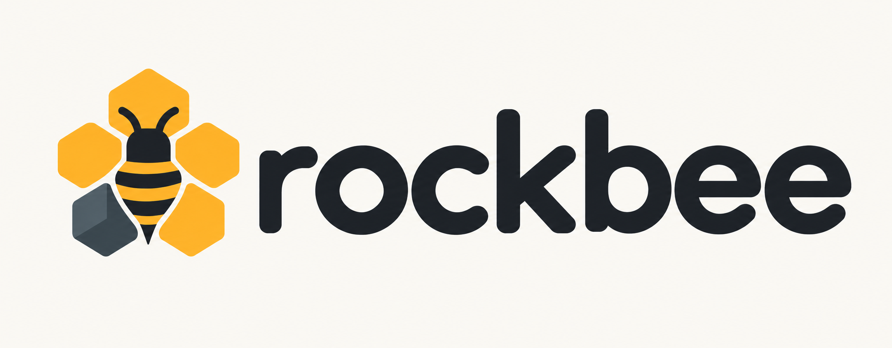

Write through one writer.
The gateway routes PUT and DELETE to the writer for a storage prefix. Success is returned after SlateDB confirms durability in object storage.

SIMPLE KV API. SHARED OBJECT STORAGE.
A simple key-value service with durable object storage and independent readers. Built in Rust on SlateDB.
Active local pilot · Validated with Docker LocalStack
The writer persists your bytes through SlateDB. A successful response means the write is durable; readers may still be catching up.
Architecture schematic · one writer per storage prefix
THE ARCHITECTURE
Provision read-serving compute separately from durable storage. Add readers as serving demand changes, while the dataset stays in shared object storage. SlateDB handles persistence; Rockbee provides the network service and client.
Read the architecture notesThe gateway routes PUT and DELETE to the writer for a storage prefix. Success is returned after SlateDB confirms durability in object storage.
GET requests are distributed round-robin. Each reader has its own SlateDB state and RAM cache, backed by the same stored data. The gateway has no key-value cache.
Readers follow manifests and WAL updates asynchronously. A durable write can still read as an older value or a miss until a reader catches up.
WHY DISAGGREGATION MATTERS
Disaggregated architecture separates the machines serving requests from the storage that keeps data durable. Dataset size and serving capacity become separate planning decisions.
Add readers against the same stored dataset as read traffic grows. Each new reader does not need its own full durable copy.
Each reader caches frequently accessed data in RAM. The full dataset can exceed cache capacity; cold reads fetch from object storage.
A replacement reader opens the existing dataset. It still needs to load metadata, catch up, and warm its cache before steady-state performance.
The tradeoffs: cold-read latency, duplicated hot data across reader caches, and object-store request and transfer costs. Rockbee still has one writer per prefix and eventual reader visibility. Savings and throughput gains depend on the workload.
Explore the design in SlateDBBYTES IN. BYTES OUT.
Keep the connection. Submit a write. Collect its result. The client correlates responses on a shared TCP connection.
Keys and values are nonempty byte arrays. Encode JSON, Protobuf, or your own format in your application.
Explore the Rust clientuse rockbee_client::{Client, Result};
#[tokio::main]
async fn main() -> Result<()> {
let gateway = std::env::var("GATEWAY_ADDR")?;
let client = Client::connect(&gateway).await?;
// Starts now. None means no TTL.
let write = client.put(b"product:42", b"hello", None);
write.await?; // Durable acknowledgement.
// Reader visibility is eventual.
let value = client.get(b"product:42").await?;
println!("{value:?}");
client.delete(b"product:42").await?;
client.shutdown().await;
Ok(())
}EXPLICIT BEHAVIOR
Failures are part of the API. These are behaviors you can inspect in the code and exercise locally.
PUT and DELETE wait for SlateDB’s durable acknowledgement before returning success.
Inspect the writerA write may have succeeded even if its reply never arrives. Mutation errors distinguish NotSent, Rejected, and Unknown. Uncertain writes are never automatically replayed.
This local test drops replies between gateway and writer. It checks that persisted writes remain visible and are not replayed. It uses a filesystem object-store adapter.
cargo test --locked -p rockbee-gateway \
--test gateway_durability \
lost_gateway_writer_acks_are_unknown_without_replaying_durable_mutationsA write acknowledgement and reader visibility are different events. Measure the gap against your running local setup with the visibility probe.
make visibility BENCH_ADDR="$GATEWAY_ADDR"WHERE IT FITS
For read-heavy applications that know the key and can tolerate a delay before updates become visible.
Enriched product cards, descriptive catalog data, and prepared page fragments.
product:42:cardPrecomputed recommendations, feature vectors, and reusable inference results.
user:123:recommendationsPublished report snapshots and slowly changing reference data.
report:daily:2026-10-11Your application prepares and refreshes the values. Rockbee serves them by key. Transactions, compare-and-swap, SQL, and immediate read-after-write visibility are outside this API.
OPTIONAL CHANGE DATA CAPTURE
rockbee-cdc uses SlateDB’s WAL reader to export durable PUT and DELETE changes as one JSON event per line. Run it separately when you need a change feed; Rockbee readers work without it.
Connect stdout to your own consumer to forward changes to another service. Downstream delivery is handled by that consumer.
Run the CDC exporter{"op":"put","key":[107],"value":[118],"seq":1,"wal_file_id":2}
{"op":"delete","key":[107],"value":null,"seq":2,"wal_file_id":3}Keys and values are byte arrays: [107] is k, and [118] is v. Sequence and WAL numbers vary.
expires_at_unix_ms. Expiration itself does not emit a DELETE event; the consumer must check the timestamp.TAKE IT FOR A SPIN
Start a writer, reader, and gateway on your machine. You’ll need Rust through rustup and Docker Desktop.
The first build compiles SlateDB and the service binaries. The local runner prints dynamic addresses and uses a unique storage prefix.
Full setup guide & existing installationsgit clone https://github.com/umit/rockbee.git
cd rockbeeFor a fresh setup, with port 4566 free:
docker compose up -d --wait
make localAlready using LocalStack? Follow the setup guide before starting another container. Keep this terminal open.
In a second terminal at the repository root, replace the address below with the gateway address printed above:
export GATEWAY_ADDR='127.0.0.1:PORT_FROM_READY_OUTPUT'
./target/release/rockbee-client --addr "$GATEWAY_ADDR" put demo:key hello
./target/release/rockbee-client --addr "$GATEWAY_ADDR" get demo:keyThe first GET can be a miss. Repeat it after the reader catches up. Stop the local runner with Ctrl-C.
A MEASURED PATH TO ADOPTION
Choose one read-heavy workload that can tolerate eventual reads. Evaluate it against your current system before expanding.
One writer per prefix. Independent eventual readers. Byte-oriented PUT, GET, and DELETE, with optional TTL.
Production AWS operation, TLS, automatic writer failover, sharding, and capacity limits remain outside the verified scope. LocalStack measurements do not establish production S3 performance.